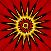
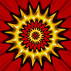
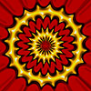
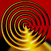
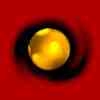

|  |
As Quatro Faces da Deusa |
|  |
Uma Proposta da Tribo
do Arco Íris |
|  |
A Grande Migração
da Tribo Ancestral |
|
Uma Abordagem Orgânica
da Realidade |
|  |
O Real Princípio
do Feminino |
|
As Celebrações
Pagãs |
|  |
Os Ritos Solares Pagãos |
|
A Revolução
Silenciosa |
|
A Farsa do Descobrimento |
|
As Fases do Deus |
|
O Tempo - Reflexões
sobre o Samhain |
|
Os Mistérios Eleusianos |
|
O Ovo do Condor |
|
Questões de Principiante |
|
O Dia Fora do Tempo |
|
Lamas x Xamãs |
|
A Questão da Loucura |
|
Sobre a Violência |
|
Vem Aí a Era do
Matriarcado? |
|
Sobre a Existência
de Deus |
|
Os Eternos Fundamentalistas |
|
A Questão das Sombras |
|
Conceito e Realidade |
|
O Dharma de Muitas Faces |
|
Quando O Mundo Virou Coisa
( I ) |
|
O Retorno de Lillith |
|
Questões Xamânicas
(O que é xamanismo) |
|
Porque Nos Dizemos Bruxos
e Bruxas? |
|
Ritual de Consagração
do Tambor |
|
Xamanismo Tolteca |
|
O Ponto Crítico |
|
Ritual de Sintonização
com o Sol |
|
Perguntas Sobre o Xamanismo |
|
Sonho |
|
Portais |
|
A Batalha Em Que Estamos |
|
Cada Momento Como Único |
|
Predador e O Ponto de
Aglutinação |
 Volta
para Índice
Themas Mágickos
Volta
para Índice
Themas Mágickos